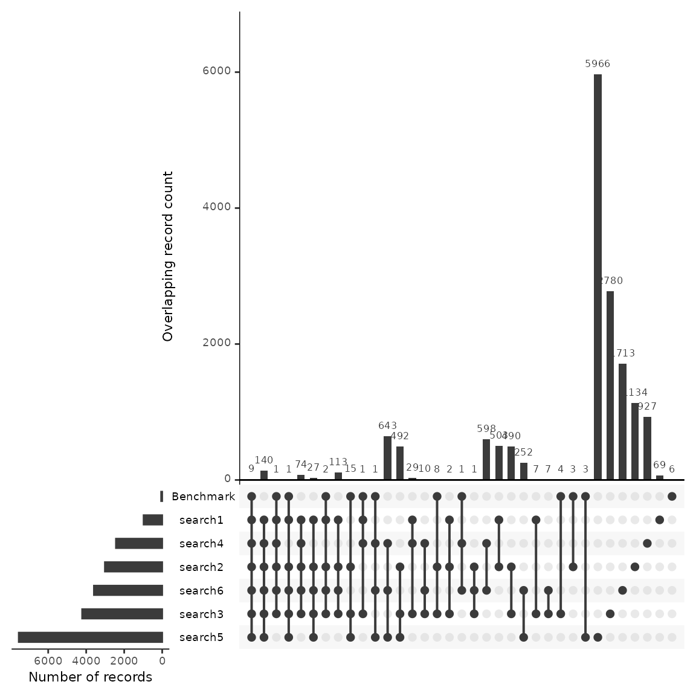

Benchmark Testing
2023-05-20
Source:vignettes/citesource_benchmark_testing.Rmd
citesource_benchmark_testing.RmdAbout this vignette
When estimating he comprehensiveness of a search, researchers often compile a list of relevant studies and evaluate whether or not they are discovered using their search strategy. While benchmarking is an important step in testing the sensitivity of a search, the process can often be a very time consuming.
This vignette will provide an example of how one may use CiteSource to speed up the process of benchmarking as well as iterate the development of search strings and search strategies.
1. Installation of packages and loading libraries
Use the following code to install CiteSource. Currently, CiteSource lives on GitHub, so you may need to first install the remotes package. This vignette also uses functions from the ggplot2 and dplyr packages.
2. Import files from multiple sources
Users can import multiple .ris or .bib files into CiteSource, which the user can label with source information such as database or platform.
# Import citation files from folder
citation_files <- list.files(path = "benchmark_data", pattern = "\\.ris", full.names = TRUE)
# Print list of citation files to console
citation_files
#> [1] "benchmark_data/Benchmarking.ris" "benchmark_data/Search1_1.ris"
#> [3] "benchmark_data/Search2_1.ris" "benchmark_data/Search2_2.ris"
#> [5] "benchmark_data/Search2_3.ris" "benchmark_data/Search2_4.ris"
#> [7] "benchmark_data/Search3_1.ris" "benchmark_data/Search3_2.ris"
#> [9] "benchmark_data/Search3_3.ris" "benchmark_data/Search3_4.ris"
#> [11] "benchmark_data/Search3_5.ris" "benchmark_data/Search4_1.ris"
#> [13] "benchmark_data/Search4_2.ris" "benchmark_data/Search4_3.ris"
#> [15] "benchmark_data/Search5_1.ris" "benchmark_data/Search5_2.ris"
#> [17] "benchmark_data/Search5_3.ris" "benchmark_data/Search5_4.ris"
#> [19] "benchmark_data/Search5_5.ris" "benchmark_data/Search5_6.ris"
#> [21] "benchmark_data/Search5_7.ris" "benchmark_data/Search5_8.ris"
#> [23] "benchmark_data/Search6_1.ris" "benchmark_data/Search6_2.ris"
#> [25] "benchmark_data/Search6_3.ris" "benchmark_data/Search6_4.ris"
# Set the path to the directory containing the citation files
file_path <- "../vignettes/benchmark_data/"
# Create a tibble that contains metadata about the citation files
metadata_tbl <- tibble::tribble(
~files, ~cite_sources, ~cite_labels,
"Benchmarking.ris", "Benchmark", "Benchmark",
"Search1_1.ris", "search1", "search",
"Search2_1.ris", "search2", "search",
"Search2_2.ris", "search2", "search",
"Search2_3.ris", "search2", "search",
"Search2_4.ris", "search2", "search",
"Search3_1.ris", "search3", "search",
"Search3_2.ris", "search3", "search",
"Search3_3.ris", "search3", "search",
"Search3_4.ris", "search3", "search",
"Search3_5.ris", "search3", "search",
"Search4_1.ris", "search4", "search",
"Search4_2.ris", "search4", "search",
"Search4_3.ris", "search4", "search",
"Search5_1.ris", "search5", "search",
"Search5_2.ris", "search5", "search",
"Search5_3.ris", "search5", "search",
"Search5_4.ris", "search5", "search",
"Search5_5.ris", "search5", "search",
"Search5_6.ris", "search5", "search",
"Search5_7.ris", "search5", "search",
"Search5_8.ris", "search5", "search",
"Search6_1.ris", "search6", "search",
"Search6_2.ris", "search6", "search",
"Search6_3.ris", "search6", "search",
"Search6_4.ris", "search6", "search",
) %>%
# Append the file path to each file name in the 'files' column
dplyr::mutate(files = paste0(file_path, files))
# Read in citations using metadata table
citations <- read_citations(metadata = metadata_tbl)
#> Import completed - with the following details:
#> file cite_source cite_string cite_label citations
#> 1 Benchmarking.ris Benchmark <NA> Benchmark 55
#> 2 Search1_1.ris search1 <NA> search 978
#> 3 Search2_1.ris search2 <NA> search 1000
#> 4 Search2_2.ris search2 <NA> search 1000
#> 5 Search2_3.ris search2 <NA> search 1000
#> 6 Search2_4.ris search2 <NA> search 15
#> 7 Search3_1.ris search3 <NA> search 1000
#> 8 Search3_2.ris search3 <NA> search 1000
#> 9 Search3_3.ris search3 <NA> search 1000
#> 10 Search3_4.ris search3 <NA> search 1000
#> 11 Search3_5.ris search3 <NA> search 214
#> 12 Search4_1.ris search4 <NA> search 1000
#> 13 Search4_2.ris search4 <NA> search 1000
#> 14 Search4_3.ris search4 <NA> search 434
#> 15 Search5_1.ris search5 <NA> search 1000
#> 16 Search5_2.ris search5 <NA> search 1000
#> 17 Search5_3.ris search5 <NA> search 1000
#> 18 Search5_4.ris search5 <NA> search 1000
#> 19 Search5_5.ris search5 <NA> search 1000
#> 20 Search5_6.ris search5 <NA> search 1000
#> 21 Search5_7.ris search5 <NA> search 1000
#> 22 Search5_8.ris search5 <NA> search 552
#> 23 Search6_1.ris search6 <NA> search 1000
#> 24 Search6_2.ris search6 <NA> search 1000
#> 25 Search6_3.ris search6 <NA> search 1000
#> 26 Search6_4.ris search6 <NA> search 5933. Deduplication and source information
CiteSource allows users to merge duplicates while maintaining information in the cite_source metadata field. Thus, information about the origin of the records is not lost in the deduplication process. The next few steps produce the dataframes that we can use in subsequent analyses.
#Deduplicate citations. This yields a dataframe of all records with duplicates merged, but the originating source information maintained in a new variable called cite_source.
unique_citations <- dedup_citations(citations)
#Count number of unique and non-unique citations from different sources and labels.
n_unique <- count_unique(unique_citations)
#For each unique citation, determine which sources were present
source_comparison <- compare_sources(unique_citations, comp_type = "sources")4. Upset plot to compare discovery of benchmarking articles
An upset plot is a useful for visualizing overlap across multiple sources and provides detail about the number of shared and unique records. Using this data we’ll outline a few potential uses of this data, when looking at the discovery of benchmarking articles.
We have uploaded 55 benchmarking articles. Of these 55 articles we can see that all but 6 have been found across the six searches. We can see the number benchmarking articles that were discovered by each string as well as the number of articles that were shared between searches.
Looking at the first column we can see that 9 benchmarking articles were found across every search. One may hypothesize that the 140 citations that follow in the second column may have a high number of relevant articles due to the fact that they were also discovered across the 6 searches. If a researcher was interested in building a larger group of benchmarking articles, it’s possible that they may want to review these articles first.
Looking at the plot we can see that search #5 has the largest number of results, well over 6k. Of these, 5,964 are unique to that search. We can also see that search #5 discovers 3 benchmarking articles that would have otherwise not been found had the search not been employed. While a researcher may want to ensure that they capture the highest number of benchmarking articles, the addition of ~6k articles may not be efficient when the result is only 3 benchmarking articles. Instead of including this search in their final strategy, they may consider reviewing the three articles that were found by this search and work to adjust their other searches instead.
Another decision in this case may be to drop search #4 and #6 as each of these strings do not contribute uniquely to the discovery of any benchmarking articles. While the data backs up this decision, there may also be more to consider. For example, if benchmarking articles are bias for any known reason, certain search strategies may be employed with an understanding that benchmarking data may not accurately reflect their potential contribution. (ex. benchmarking articles were gathered from previous systematic reviews that focused on a specific geographic region and the current review is global in nature).
#Generate a source comparison upset plot.
plot_source_overlap_upset(source_comparison, decreasing = c(TRUE, TRUE))
#> Plotting a large number of groups. Consider reducing nset or sub-setting the data.
5. Reviewing the record table
This record table is helpful in reviewing which citations were found across each database as well as quickly checking to see which benchmarking articles were not found in the search.
unique_citations %>%
dplyr::filter(stringr::str_detect(cite_label, "Benchmark")) %>%
record_level_table(return = "DT")